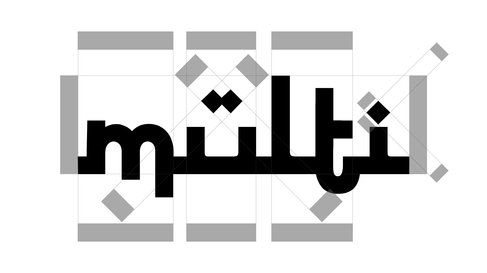
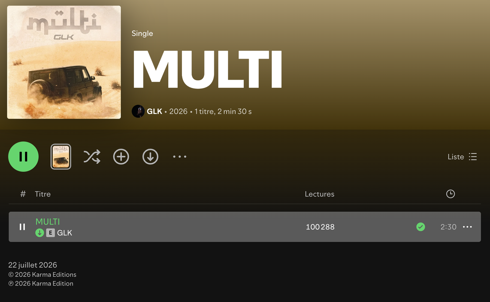

Cover design & custom typography
A cover built for GLK a name that no longer needs an introduction in French rap. Beyond the desert scene staged on the artwork, the real heart of this project is a custom wordmark drawn entirely from scratch: a single piece of typography designed to carry the release on its own, across every format and every platform.
GLK is a key figure in the French rap scene: his discography and career speak for themselves. Being asked to design the cover art for one of his singles isn’t just any commission, it’s the kind of project that sets the bar very high and demands a result worthy of an artist who has nothing left to prove.
This project wouldn't have happened without the trust of AKM and Sommet Création, who opened the door to working directly on a release of this scale. A huge thank you to both for the opportunity, and for the confidence to let this vision run all the way through.

Before any typography could work, the image needed to carry the right weight on its own. The composition was built in Photoshop: a raw desert setting, a warm sun-bleached color grade, and a cloud of dust kicked up behind the vehicle to inject motion and tension into a still frame. Every layer of dust, grain, light falloff was worked by hand until the scene felt shot, not composited.
That desert palette wasn't a random choice: it sets the tone for the whole release and becomes the color language the typography then has to sit inside, rather than fight against.

This is where the real work lives. The "multi" wordmark was constructed letter by letter in Illustrator, on a strict grid, with every curve, counter and junction redrawn by hand until the whole word reads as a single, deliberate shape rather than a sequence of separate letters.
Every angle had to stay consistent, every counter had to breathe the same way, and the whole construction had to hold up whether it's stamped small in a corner of a Story or blown up full-screen on a cover. That level of precision is where the vast majority of the time on this project went far more than the photo composition itself. The image sets the mood; the type is what makes the release recognizable in a single glance, on any platform, at any size.

A cover gets seen once, scrolled past, replaced by the next release. A wordmark like this one is built to outlast the scroll, it's the piece that travels across the single's artwork, its promotional content, and every platform it lands on, always instantly identifiable as "MULTI". That's the whole point of treating typography as a design discipline in its own right, not an afterthought stamped on top of a finished image.

Four tones pulled directly from the artwork, the desert palette that anchors the whole release and the backdrop the "multi" wordmark was built to sit on top of.